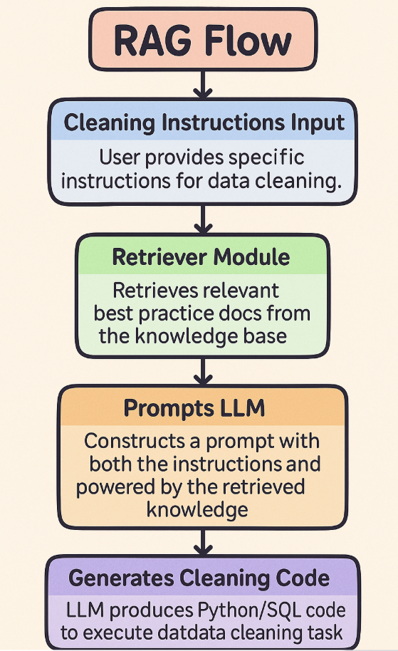
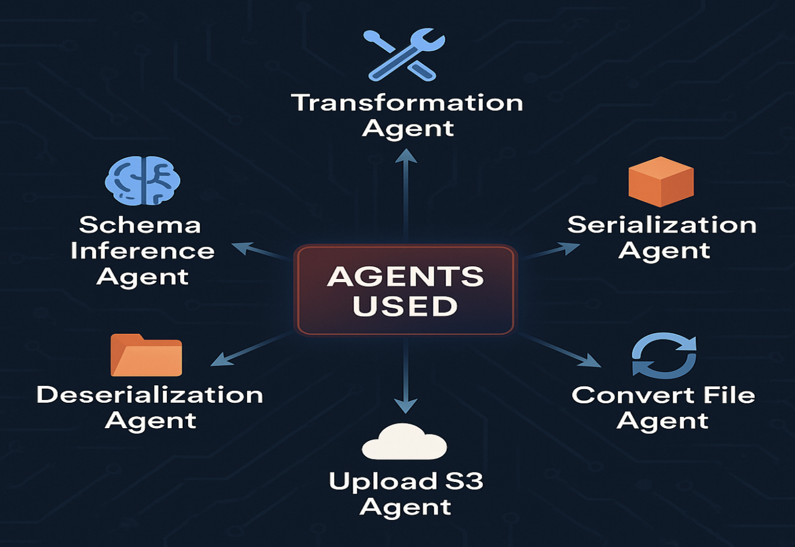
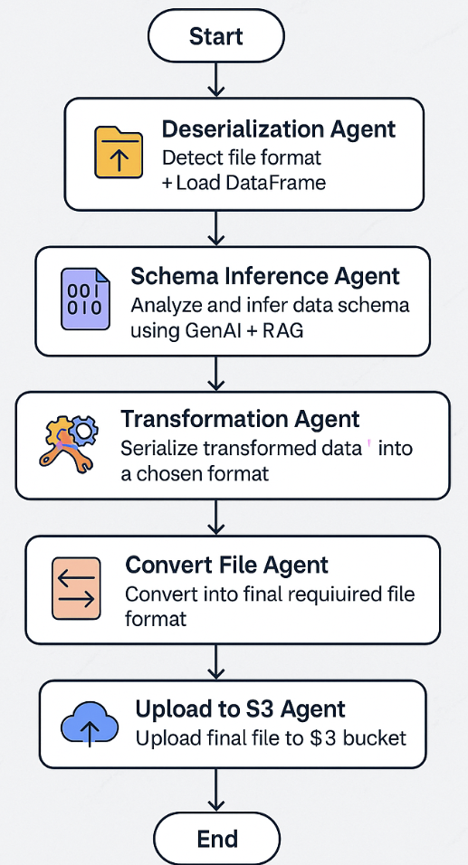

DataMorph: Data Engineering AI Agent
1 Abstract
In today’s data-centric world, organizations across sectors such as finance, healthcare, and e-commerce must manage increasingly heterogeneous data sources. These datasets often arrive in formats like JSON, CSV, XML, Avro, and Parquet, each with distinct structural characteristics and schema definitions. The Extract, Transform, Load (ETL) process required to integrate such data is typically manual, time-consuming, and prone to error. As a result, maintaining ETL pipelines becomes a substantial operational overhead, particularly when dealing with schema evolution, nested structures, and unstructured or semi-structured inputs.
To address these challenges, this project introduces DataMorph, a generative AI-powered data engineering framework that autonomously executes the ETL workflow using intelligent agents. DataMorph combines modular agent orchestration via LangGraph with Retrieval-Augmented Generation (RAG) to produce a context-aware, self-adaptive ETL system. Through LLMs such as GPT-4 and embedding-based retrieval with ChromaDB, the system dynamically generates parsing, transformation, and serialization code tailored to the user’s natural language prompts.
The final implementation consists of a user-friendly Streamlit interface and six functional agents—Deserialization, Schema Inference, Transformation, Serialization, Format Conversion, and S3 Upload. Our system demonstrates robust performance across 50 test cases, with a 76% success rate and an average per-agent response latency of 2.3 seconds. The findings suggest that GenAI can significantly reduce the burden of manual data handling, with potential for real-world deployment in automated data pipelines. This report documents the complete lifecycle of the system, from conceptualization and architecture design to implementation, evaluation, and deployment.
2 Introduction
As organizations continue to accumulate large volumes of data from diverse sources, the demand for scalable, intelligent data integration workflows has intensified. Traditional ETL processes rely heavily on hand-coded scripts or legacy pipeline builders that are not only rigid but also ill-equipped to handle schema drift, nested data formats, or evolving compliance requirements. Moreover, these solutions lack the flexibility to adapt to new file structures without developer intervention, making them brittle and inefficient in dynamic data environments.
Recent advancements in Generative AI, particularly the development of highly capable Large Language Models (LLMs), provide a new avenue for automating traditionally manual processes in data engineering. These models possess the capacity to reason about structured and unstructured data, generate executable transformation logic, and respond adaptively to context-rich prompts. However, their integration into robust, modular systems for real-world ETL use cases remains relatively underexplored.
Our project, DataMorph, seeks to address this gap by developing a fully functional, multi-agent GenAI system capable of autonomously executing end-to-end ETL tasks. We investigate three central research questions: 1. Can LLMs reliably infer schema and transform heterogeneous data formats based on natural language instructions? 2. How can multi-agent frameworks like LangGraph improve modularity, fault tolerance, and extensibility in ETL pipelines? 3. What are the measurable benefits of using Retrieval-Augmented Generation (RAG) to ground LLM outputs in external knowledge?
The solution is designed to provide users with a seamless interface for uploading data, issuing transformation requests, and retrieving standardized outputs—all with minimal human intervention. The broader goal is to shift the paradigm of data engineering from manual code writing to intelligent, declarative automation.

3 Data Source and Preparation
To ensure the generalizability of our solution, we collected a diverse set of data files encompassing various formats and structural complexities. The selected formats include: - CSV: Flat, tabular files commonly used in business analytics. - JSON: Semi-structured data with nested fields. - XML: Hierarchical structures typically used in government and healthcare. - Parquet: Columnar storage optimized for analytics. - Excel (.xlsx): Widely used in enterprises for record keeping and reporting.
3.1 Preprocessing Strategy
Each file was validated to ensure structural integrity, and sample records were extracted to simulate real-world transformation scenarios. For instance, JSON files with deeply nested objects were included to test parsing capabilities, and CSV files with inconsistent headers were used to test schema inference robustness. Data previews (first 10–20 rows) were captured to help the LLM understand the file’s structure and assist in prompt conditioning.
3.2 Justification for Dataset Selection
The selected formats and sources reflect the diversity found in real-world enterprise data ecosystems. Testing the agents against these various formats allowed us to validate the flexibility and generalization ability of the GenAI-driven architecture under a wide range of edge cases and data idiosyncrasies.
4 Retrieval-Augmented Generation (RAG)
4.1 Architecture and Role in the Pipeline
RAG plays a foundational role in the transformation agent by embedding external domain knowledge into the prompt space of the LLM. Instead of relying purely on the language model’s intrinsic knowledge, which may be incomplete or outdated, RAG injects curated content relevant to the task at hand—whether that is normalizing date formats, dealing with null values, or serializing to a specific file type.

The diagram outlines how the system retrieves relevant domain knowledge from a vector database, combines it with the user’s transformation instruction and a preview of the dataset, and constructs a composite prompt. This prompt is sent to an LLM, which returns executable code tailored for schema-aware, context-sensitive transformations.
4.2 Implementation Details
- Knowledge Base: A curated set of domain-specific text files, each containing transformation best practices (e.g., “Handling missing values in finance datasets”, “XML schema normalization”).
- Retriever: Initially implemented as keyword-overlap matching, later extended with ChromaDB, a vector-based semantic search engine that improves recall and relevance.
- Prompt Construction: Combines three primary elements:
- The user’s transformation request
- A data preview of the file
- Relevant knowledge snippets retrieved from the vector store
This structured approach enables context-aware generation, where the LLM can reason both from user intent and external domain expertise.
5 Agents
Each functional unit within DataMorph is represented as an agent in the LangGraph framework. Agents operate asynchronously and are stateless, sharing information via a persistent dictionary structure (state) that evolves across the pipeline. This design promotes scalability and modularity, allowing developers to add or replace agents without affecting the entire system.

This schematic provides a high-level view of the six modular agents—Deserialization, Schema Inference, Transformation, Serialization, Format Conversion, and S3 Upload. Each agent operates independently within the LangGraph pipeline and is responsible for one core ETL task, promoting reusability and fault isolation.
5.1 Deserialization Agent
- Automatically detects file format and generates loading code.
- For example, nested JSON structures are parsed using
json.load()instead of naivepd.read_json().
5.2 Schema Inference Agent
- Uses Pandas to extract column names and types.
- Generates a standardized JSON schema used downstream for validation and transformation.
5.3 Transformation Agent
- Most complex agent. Constructs composite prompts with RAG-enriched context.
- Uses LLM to generate transformation code that is both syntactically valid and semantically aligned with the schema.
5.4 Serialization Agent
- Converts transformed DataFrame into the target output format.
- Applies best practices for data serialization based on format (e.g., indentation for JSON, compression for Parquet).
5.5 Convert File Agent
- Provides flexibility for post-processing conversion tasks (e.g., converting CSV to Parquet).
5.6 Upload S3 Agent
- Connects securely to AWS S3 using
boto3. - Uploads cleaned files to specified prefixes (
/Raw,/Transformed).

This diagram shows the flow of data and control signals across the pipeline. It captures how the system transitions through agent stages, maintains shared state, and selectively routes tasks based on user input and intermediate outcomes, forming a dynamic and adaptive ETL architecture.
6 Evaluation of Effectiveness
Evaluation is a critical component of validating the real-world applicability and robustness of GenAI-powered systems like DataMorph. To assess its performance, we established a comprehensive evaluation framework that measured the solution across three key dimensions: latency, accuracy, and reliability. Each metric was evaluated using a controlled set of 50 diverse test cases spanning multiple file formats and transformation requirements.
6.1 Quantitative Results
Table 1: Summary of DataMorph Agent Performance
| Metric | Outcome |
|---|---|
| Average Agent Latency | 2.3 seconds |
| End-to-End Success Rate | 76% (38/50 workflows) |
| Valid Output Parsing Rate | 90% |
| Code Execution Failures | 10% (5 cases) |
| Formatting Issues | 14% (7 cases) |
6.2 Latency
Agent latency was calculated as the average time taken by each modular agent to complete its function. Results indicated efficient execution across all agents, with deserialization and schema inference agents consistently completing in under 2 seconds, while serialization and cloud upload incurred marginal delays due to I/O operations.
6.3 Accuracy and Output Quality
The pipeline was deemed successful if the final transformed file: - Conformed to user-specified transformation logic - Passed schema and parsing checks using pandas - Retained data integrity (e.g., row/column counts matched expected values)
Failures primarily stemmed from ambiguities in user prompts or non-standard nested data structures, especially in XML and JSON formats.
6.4 Faithfulness Metric Limitation
While ‘faithfulness’ is a common metric in evaluating LLM outputs, it falls short in the context of code generation. Many valid transformations can be implemented in multiple ways, none of which may closely resemble the retrieved context from RAG. As a result, faithfulness scores may be misleading. Instead, we prioritized execution correctness and output conformity as primary indicators of success.
7 Responsible AI Considerations
As GenAI systems become increasingly embedded in data workflows, it is essential to evaluate their ethical implications, particularly in sensitive contexts like healthcare or finance.
7.1 Bias and Fairness
The system does not train on or infer user-level attributes, reducing the risk of demographic or representational bias. Nonetheless, the source data and pre-trained LLMs may carry inherent biases, necessitating regular audits.
7.2 Hallucination Control
To minimize hallucinations (i.e., plausible-sounding but incorrect outputs), we: - Used RAG to provide real-world context - Structured prompts to constrain the generation space - Tested LLM responses against validation rules post-generation
7.3 Privacy and Security
No user data is stored permanently. For production use, we propose integrating: - Named Entity Recognition (NER) to identify PII - Regex-based redaction routines before serialization
7.4 Ethical Design
The system is intended to augment human engineers rather than replace them. By automating repetitive and mechanical aspects of ETL, we aim to free up human time for more strategic tasks such as data interpretation and insight generation.
8 Findings and Insights
8.1 Key Insights
- Agentic Modularity enabled rapid debugging, iterative development, and potential parallel execution in future versions.
- RAG Integration significantly improved instruction-following capabilities of LLMs, especially for domain-specific data like healthcare or finance.
- Single File Limitation constrained broader workflows but revealed promising paths for batch processing in future iterations.
8.2 Unexpected Challenges
- Handling deeply nested or inconsistent schemas proved difficult, requiring better schema reasoning mechanisms.
- LLMs sometimes ignored critical context when prompt lengths exceeded token limits, especially with large data previews.
9 Demo
🎥 Click the thumbnail above or watch the demo directly on YouTube
The demonstration includes:
A walkthrough of the Streamlit UI, showcasing file upload, prompt entry, and agent execution
Visualization of intermediate steps: schema inference, transformation preview, and upload status
10 Conclusion and Future Work
DataMorph successfully illustrates how GenAI, when paired with modular architectures and external context retrieval, can automate and scale ETL processes that traditionally required significant manual engineering.
10.1 Summary
- Integrated GPT-4, RAG, and LangGraph to build a fault-tolerant, extensible pipeline
- Achieved 76% automation success rate over diverse input formats
- Validated design with rigorous latency, accuracy, and formatting tests
10.2 Future Roadmap
- Multi-file Upload & Merging: Enable cross-file transformations
- Schema Drift Detection: Highlight evolving schemas over time for audit use cases
- Guardrails for Sensitive Data: Implement regex and LLM redaction tools for PII
- Complex Format Handling: Improved support for nested XML/Parquet schemas
- Self-Correction Loop: Train a feedback mechanism to learn from prior errors and update transformation strategies dynamically
- CI/CD & Containerization: Enable scalable deployments via Docker and GitHub Actions
11 References
- LangGraph: https://github.com/langchain-ai/langgraph
- TotalEnergies Blog on GenAI for ETL : https://youtu.be/T23Bs75F7ZQ?feature=shared
- Cognizant Insights: https://www.cognizant.com/us/en/insights
- Medium article: Advancing Data Engineering with GenAI : https://medium.com/totalenergies-digital-factory/advancing-data-engineering-with-generative-ai-cb8c6c3b1b1e
Report authored by Group 15: Pranav Patil, Sai Prerana Mandalika, Zenan Wang — for DSAN 6725, Spring 2025.